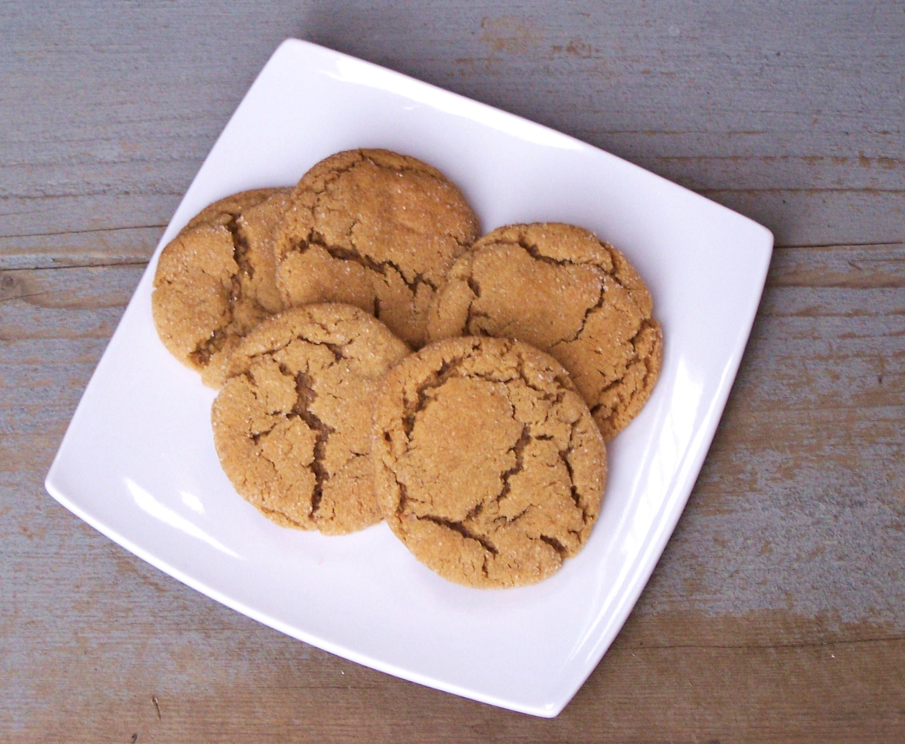

Gingersnaps
Source: “Chewy Gingersnaps” from hiddenponies.com
Yield: 3 dozen cookies
Ingredients
- ¾ cup butter or margarine
- ½ cup granulated sugar
- ½ cup brown sugar
- 1 egg
- ¼ cup fancy molasses
- 2 cups all-purpose flour
- 2 tsp baking soda
- ¼ tsp salt
- 2 tsp ginger
- 2 tsp cinnamon
- Sugar for rolling cookies in
Instructions
- Preheat oven to 350F.
- In large bowl, cream together butter and sugar until light and fluffy. Beat in egg and molasses.
- In separate bowl, combine flour, soda, salt and spices. Blend dry ingredients into creamed mixture.
- Shape dough into 1” balls and roll in sugar. Place 2” apart on greased or parchment paper-lined cookie sheets. Bake for 8-10 minutes, or until edges are golden. (Don’t overbake - cookies should be slightly soft when removed from oven.)
- Cool on baking sheet a few minutes before removing to racks to cool completely. Store in an airtight container at room temperature for 5 days (plastic container if you want them to stay chewy, glass if you prefer crispy cookies). These can also be frozen for 3-6 months.